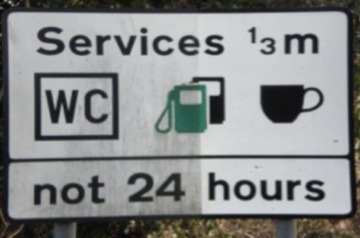

Light does the cleaning.
Photocatalysis works on the same principle as a solar cell — it turns light into a surface reaction that breaks down dirt and airborne pollutants.
How it works
When daylight (or ordinary indoor light) reaches a treated surface, the photocatalyst is activated and drives a reaction that breaks down organic dirt and certain airborne pollutants that come into contact with the surface.
Light activates
Natural or artificial light energises the photocatalytic layer on the surface.
Pollutants break down
Organic dirt and pollutants such as NOx that contact the surface are broken down into far less harmful residues.
Surfaces stay cleaner
Less dirt adheres and builds up, so surfaces stay visibly cleaner for longer — with less maintenance.

The standards behind the claims
We only make claims that can be measured and certified. The relevant independent tests for photocatalytic coatings are:
| Standard | What it measures |
|---|---|
| ISO 22197-1 | Removal of NOx from air (pollutant-reduction performance) |
| ISO 27448 | Self-cleaning performance (water contact angle) |
| VOC / EN | Low-VOC content; CE marking where applicable |
Manufacturer tests indicate up to ~91% airborne-pollutant reduction on coated façades in polluted city air. Third-party certificates are provided to specifiers on request.
What we say — and what we don't
We claim
Self-cleaning surfaces · reduction of airborne pollutants including NOx · reduced maintenance · low-VOC, waterborne formulations — all backed by test data.
Claim boundary
Public copy stays inside the tested self-cleaning, pollutant-reduction and low-VOC claim set. Anything outside that requires a separate GB regulatory route before it can be used in market.